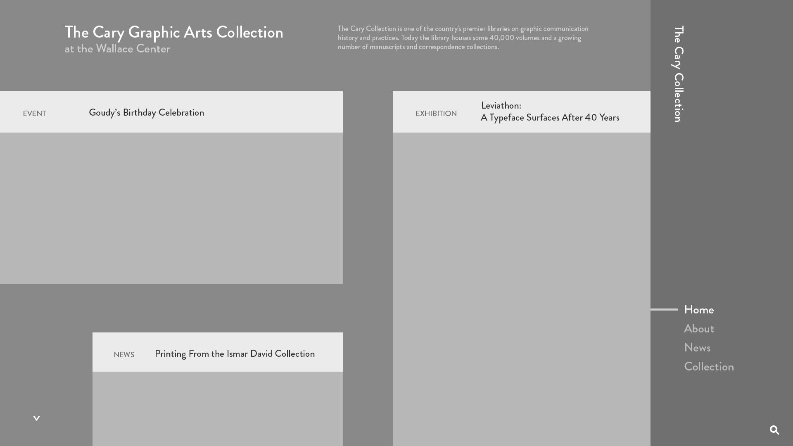
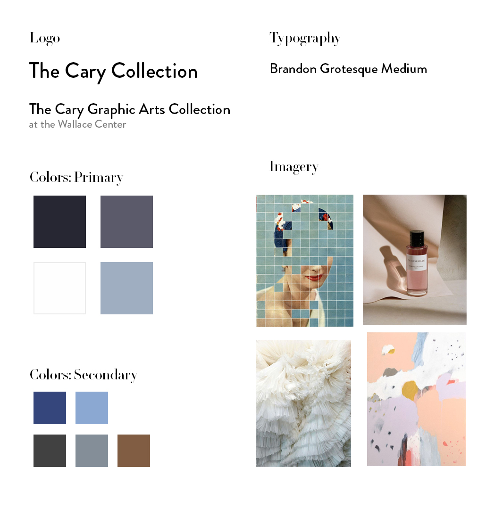
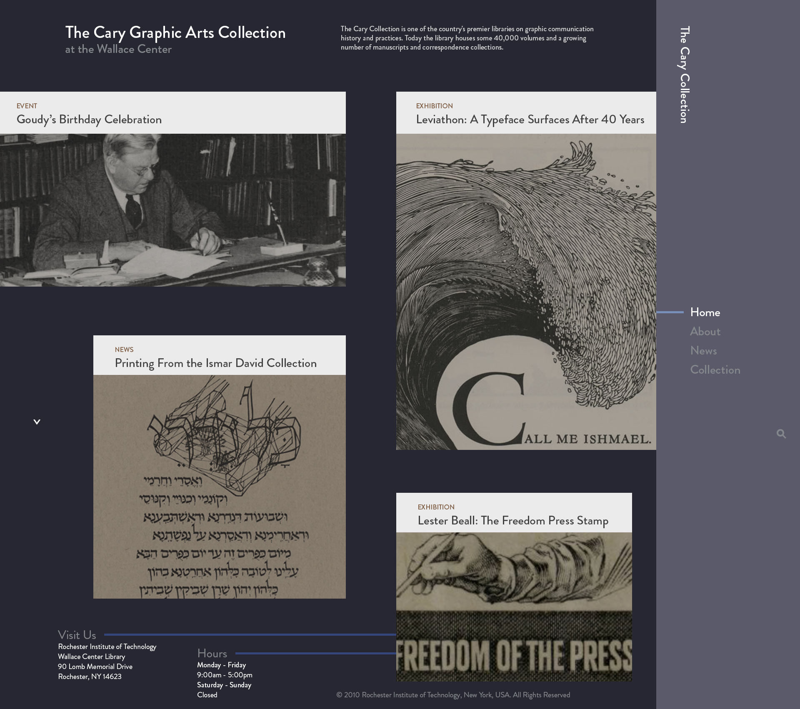

The Cary Collection
RIT - New Media Interactive II
This project was a redesign of the website for The Cary Collection, a collection of old documents held in RIT's library. We talked to the collection's curators and developed a mobile and desktop version of a workflow on the site.
Slide 01 / 03
Next

We started out by developing wireframes based on our conversations with the curators to highlight their needs
Slide 02 / 03
Next

We developed a style tile and selected colors and fonts and moods that we wanted our design to carry across
Slide 03 / 03
Next

We created final comps for the workflow and then animated the interactions between the pages of the site